Web Server Statistics for cs-learning.ml
Web Server Statistics for cs-learning.ml
Program started on Mon, May 14 2018 at 9:35 PM.
Analyzed requests from Sun, May 13 2018 at 11:05 PM to Mon, May 14 2018 at 5:56 PM (0.79 days).
Web Server Statistics for cs-learning.mlProgram started on Mon, May 14 2018 at 9:35 PM.
Analyzed requests from Sun, May 13 2018 at 11:05 PM to Mon, May 14 2018 at 5:56 PM (0.79 days).
(Go To: Top | General Summary | Monthly Report | Daily Summary | Hourly Summary | Domain Report | Organization Report | Redirected Referrer Report | Failed Referrer Report | Referring Site Report | Browser Report | Browser Summary | Operating System Report | Status Code Report | File Size Report | File Type Report | Directory Report | Request Report)
Successful requests: 3,738
Average successful requests per day: 4,757
Successful requests for pages: 65
Average successful requests for pages per day: 81
Failed requests: 87
Redirected requests: 109
Distinct files requested: 728
Distinct hosts served: 14
Data transferred: 35.62 megabytes
Average data transferred per day: 45.36 megabytes
(Go To: Top | General Summary | Monthly Report | Daily Summary | Hourly Summary | Domain Report | Organization Report | Redirected Referrer Report | Failed Referrer Report | Referring Site Report | Browser Report | Browser Summary | Operating System Report | Status Code Report | File Size Report | File Type Report | Directory Report | Request Report)
Each unit ( ) represents 2 requests for pages or part thereof.
) represents 2 requests for pages or part thereof.
| month | #reqs | #pages | |
|---|---|---|---|
| May 2018 | 3738 | 65 |  |
Busiest month: May 2018 (65 requests for pages).
(Go To: Top | General Summary | Monthly Report | Daily Summary | Hourly Summary | Domain Report | Organization Report | Redirected Referrer Report | Failed Referrer Report | Referring Site Report | Browser Report | Browser Summary | Operating System Report | Status Code Report | File Size Report | File Type Report | Directory Report | Request Report)
Each unit () represents 2 requests for pages or part thereof.
| day | #reqs | #pages | |
|---|---|---|---|
| Sun | 392 | 5 |  |
| Mon | 3346 | 60 |    |
| Tue | 0 | 0 | |
| Wed | 0 | 0 | |
| Thu | 0 | 0 | |
| Fri | 0 | 0 | |
| Sat | 0 | 0 |
(Go To: Top | General Summary | Monthly Report | Daily Summary | Hourly Summary | Domain Report | Organization Report | Redirected Referrer Report | Failed Referrer Report | Referring Site Report | Browser Report | Browser Summary | Operating System Report | Status Code Report | File Size Report | File Type Report | Directory Report | Request Report)
Each unit () represents 1 request for a page.
| hour | #reqs | #pages | |
|---|---|---|---|
| 0 | 689 | 1 | |
| 1 | 251 | 4 | |
| 2 | 384 | 8 | |
| 3 | 0 | 0 | |
| 4 | 0 | 0 | |
| 5 | 33 | 0 | |
| 6 | 0 | 0 | |
| 7 | 0 | 0 | |
| 8 | 53 | 2 | |
| 9 | 7 | 1 | |
| 10 | 260 | 11 | |
| 11 | 179 | 3 | |
| 12 | 100 | 2 | |
| 13 | 821 | 9 | |
| 14 | 526 | 17 | |
| 15 | 0 | 0 | |
| 16 | 1 | 1 | |
| 17 | 42 | 1 | |
| 18 | 0 | 0 | |
| 19 | 0 | 0 | |
| 20 | 0 | 0 | |
| 21 | 0 | 0 | |
| 22 | 0 | 0 | |
| 23 | 392 | 5 | |
(Go To: Top | General Summary | Monthly Report | Daily Summary | Hourly Summary | Domain Report | Organization Report | Redirected Referrer Report | Failed Referrer Report | Referring Site Report | Browser Report | Browser Summary | Operating System Report | Status Code Report | File Size Report | File Type Report | Directory Report | Request Report)
Listing domains, sorted by the amount of traffic.
| #reqs | %bytes | domain |
|---|---|---|
| 3738 | 100% | [unresolved numerical addresses] |
(Go To: Top | General Summary | Monthly Report | Daily Summary | Hourly Summary | Domain Report | Organization Report | Redirected Referrer Report | Failed Referrer Report | Referring Site Report | Browser Report | Browser Summary | Operating System Report | Status Code Report | File Size Report | File Type Report | Directory Report | Request Report)
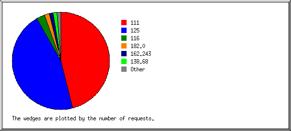
Listing organizations, sorted by the number of requests.
| #reqs | %bytes | organization |
|---|---|---|
| 1719 | 50.38% | 111 |
| 1713 | 32.97% | 125 |
| 105 | 6.06% | 116 |
| 58 | 3.11% | 182.0 |
| 50 | 3.01% | 162.243 |
| 50 | 3.01% | 138.68 |
| 30 | 0.01% | 103 |
| 6 | 1.26% | 211.249 |
| 3 | 91 | |
| 2 | 0.07% | 114 |
| 1 | 0.02% | 199.30 |
| 1 | 0.09% | 107 |
(Go To: Top | General Summary | Monthly Report | Daily Summary | Hourly Summary | Domain Report | Organization Report | Redirected Referrer Report | Failed Referrer Report | Referring Site Report | Browser Report | Browser Summary | Operating System Report | Status Code Report | File Size Report | File Type Report | Directory Report | Request Report)
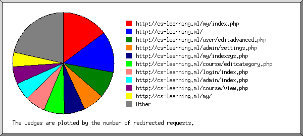
Listing referring URLs, sorted by the number of redirected requests.
(Go To: Top | General Summary | Monthly Report | Daily Summary | Hourly Summary | Domain Report | Organization Report | Redirected Referrer Report | Failed Referrer Report | Referring Site Report | Browser Report | Browser Summary | Operating System Report | Status Code Report | File Size Report | File Type Report | Directory Report | Request Report)
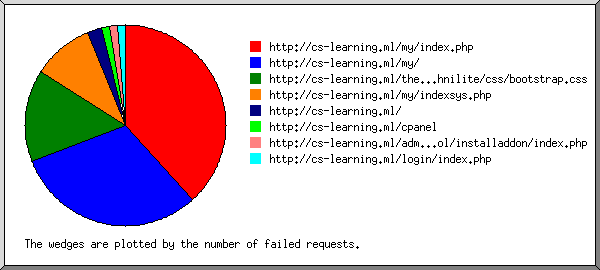
Listing referring URLs, sorted by the number of failed requests.
(Go To: Top | General Summary | Monthly Report | Daily Summary | Hourly Summary | Domain Report | Organization Report | Redirected Referrer Report | Failed Referrer Report | Referring Site Report | Browser Report | Browser Summary | Operating System Report | Status Code Report | File Size Report | File Type Report | Directory Report | Request Report)
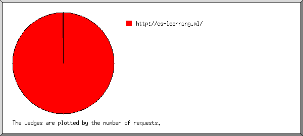
Listing referring sites, sorted by the number of requests.
| #reqs | site |
|---|---|
| 3652 | http://cs-learning.ml/ |
| 1 | android-app://com.google.android.gm/ |
(Go To: Top | General Summary | Monthly Report | Daily Summary | Hourly Summary | Domain Report | Organization Report | Redirected Referrer Report | Failed Referrer Report | Referring Site Report | Browser Report | Browser Summary | Operating System Report | Status Code Report | File Size Report | File Type Report | Directory Report | Request Report)
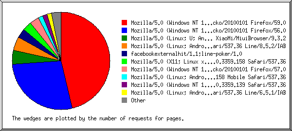
Listing browsers with at least 1 request for a page, sorted by the number of requests for pages.
| #reqs | #pages | browser |
|---|---|---|
| 1565 | 30 | Mozilla/5.0 (Windows NT 10.0; Win64; x64; rv:59.0) Gecko/20100101 Firefox/59.0 |
| 1711 | 18 | Mozilla/5.0 (Windows NT 10.0; WOW64; rv:56.0) Gecko/20100101 Firefox/56.0 |
| 60 | 3 | Mozilla/5.0 (Linux; U; Android 5.0.2; en-us; Mi 4i Build/LRX22G) AppleWebKit/537.36 (KHTML, like Gecko) Version/4.0 Chrome/53.0.2785.146 Mobile Safari/537.36 XiaoMi/MiuiBrowser/9.3.2 |
| 58 | 3 | Mozilla/5.0 (Linux; Android 6.0.1; Redmi Note 4X Build/MMB29M; wv) AppleWebKit/537.36 (KHTML, like Gecko) Version/4.0 Chrome/61.0.3163.98 Mobile Safari/537.36 Line/8.5.2/IAB |
| 5 | 2 | facebookexternalhit/1.1;line-poker/1.0 |
| 11 | 2 | Mozilla/5.0 (X11; Linux x86_64) AppleWebKit/537.36 (KHTML, like Gecko) Chrome/66.0.3359.158 Safari/537.36 |
| 100 | 2 | Mozilla/5.0 (Windows NT 10.0; Win64; x64; rv:57.0) Gecko/20100101 Firefox/57.0 |
| 51 | 1 | Mozilla/5.0 (Linux; Android 5.1.1; A37f Build/LMY47V) AppleWebKit/537.36 (KHTML, like Gecko) Chrome/66.0.3359.158 Mobile Safari/537.36 |
| 42 | 1 | Mozilla/5.0 (Windows NT 10.0; Win64; x64) AppleWebKit/537.36 (KHTML, like Gecko) Chrome/66.0.3359.139 Safari/537.36 |
| 44 | 1 | Mozilla/5.0 (Linux; Android 5.0.2; Mi 4i Build/LRX22G; wv) AppleWebKit/537.36 (KHTML, like Gecko) Version/4.0 Chrome/57.0.2987.132 Mobile Safari/537.36 Line/6.5.1/IAB |
| 1 | 1 | Mozilla/5.0 (Macintosh; U; Intel Mac OS X 10.5; en-US; rv:1.9.2.13) Gecko/20101203 Firefox/3.6.13 GTB7.1 |
| 51 | 1 | Mozilla/5.0 (Linux; Android 5.1.1; A37f Build/LMY47V; wv) AppleWebKit/537.36 (KHTML, like Gecko) Version/4.0 Chrome/66.0.3359.158 Mobile Safari/537.36 Line/8.6.1/IAB |
| 38 | 0 | [not listed: 4 browsers] |
(Go To: Top | General Summary | Monthly Report | Daily Summary | Hourly Summary | Domain Report | Organization Report | Redirected Referrer Report | Failed Referrer Report | Referring Site Report | Browser Report | Browser Summary | Operating System Report | Status Code Report | File Size Report | File Type Report | Directory Report | Request Report)
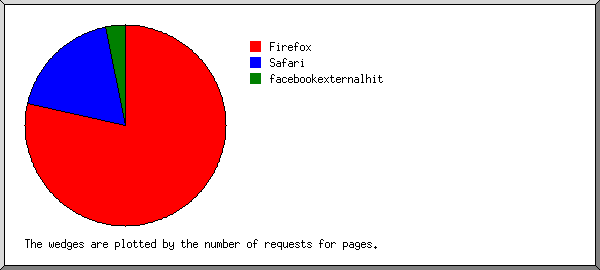
Listing browsers with at least 1 request for a page, sorted by the number of requests for pages.
| # | #reqs | #pages | browser |
|---|---|---|---|
| 1 | 3379 | 51 | Firefox |
| 1565 | 30 | Firefox/59 | |
| 1711 | 18 | Firefox/56 | |
| 100 | 2 | Firefox/57 | |
| 1 | 1 | Firefox/3 | |
| 2 | 319 | 12 | Safari |
| 319 | 12 | Safari/537 | |
| 3 | 5 | 2 | facebookexternalhit |
| 5 | 2 | facebookexternalhit/1 | |
| 34 | 0 | [not listed: 2 browsers] |
(Go To: Top | General Summary | Monthly Report | Daily Summary | Hourly Summary | Domain Report | Organization Report | Redirected Referrer Report | Failed Referrer Report | Referring Site Report | Browser Report | Browser Summary | Operating System Report | Status Code Report | File Size Report | File Type Report | Directory Report | Request Report)
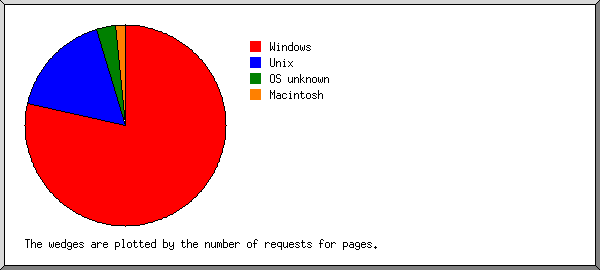
Listing operating systems, sorted by the number of requests for pages.
| # | #reqs | #pages | OS |
|---|---|---|---|
| 1 | 3420 | 51 | Windows |
| 3418 | 51 | Windows NT | |
| 2 | 0 | Unknown Windows | |
| 2 | 277 | 11 | Unix |
| 277 | 11 | Linux | |
| 3 | 39 | 2 | OS unknown |
| 4 | 1 | 1 | Macintosh |
(Go To: Top | General Summary | Monthly Report | Daily Summary | Hourly Summary | Domain Report | Organization Report | Redirected Referrer Report | Failed Referrer Report | Referring Site Report | Browser Report | Browser Summary | Operating System Report | Status Code Report | File Size Report | File Type Report | Directory Report | Request Report)
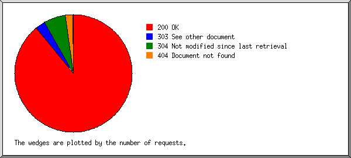
Listing status codes, sorted numerically.
| #reqs | status code |
|---|---|
| 3504 | 200 OK |
| 109 | 303 See other document |
| 234 | 304 Not modified since last retrieval |
| 86 | 404 Document not found |
| 1 | 410 Document gone permanently |
(Go To: Top | General Summary | Monthly Report | Daily Summary | Hourly Summary | Domain Report | Organization Report | Redirected Referrer Report | Failed Referrer Report | Referring Site Report | Browser Report | Browser Summary | Operating System Report | Status Code Report | File Size Report | File Type Report | Directory Report | Request Report)
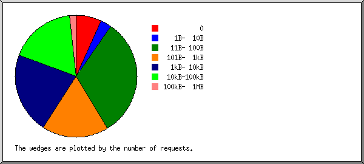
| size | #reqs | %bytes |
|---|---|---|
| 0 | 255 | |
| 1B- 10B | 110 | |
| 11B- 100B | 1185 | 0.10% |
| 101B- 1kB | 657 | 0.85% |
| 1kB- 10kB | 803 | 7.60% |
| 10kB-100kB | 663 | 60.38% |
| 100kB- 1MB | 65 | 31.07% |
(Go To: Top | General Summary | Monthly Report | Daily Summary | Hourly Summary | Domain Report | Organization Report | Redirected Referrer Report | Failed Referrer Report | Referring Site Report | Browser Report | Browser Summary | Operating System Report | Status Code Report | File Size Report | File Type Report | Directory Report | Request Report)
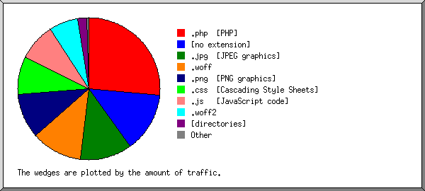
Listing extensions with at least 0.1% of the traffic, sorted by the amount of traffic.
| #reqs | %bytes | extension |
|---|---|---|
| 2172 | 26.50% | .php [PHP] |
| 566 | 13.55% | [no extension] |
| 40 | 11.73% | .jpg [JPEG graphics] |
| 88 | 11.66% | .woff |
| 187 | 10.22% | .png [PNG graphics] |
| 286 | 8.66% | .css [Cascading Style Sheets] |
| 247 | 8.59% | .js [JavaScript code] |
| 33 | 6.65% | .woff2 |
| 65 | 2.09% | [directories] |
| 14 | 0.32% | .gif [GIF graphics] |
| 40 | 0.03% | [not listed: 2 extensions] |
(Go To: Top | General Summary | Monthly Report | Daily Summary | Hourly Summary | Domain Report | Organization Report | Redirected Referrer Report | Failed Referrer Report | Referring Site Report | Browser Report | Browser Summary | Operating System Report | Status Code Report | File Size Report | File Type Report | Directory Report | Request Report)
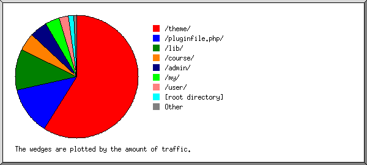
Listing directories with at least 0.01% of the traffic, sorted by the amount of traffic.
| #reqs | %bytes | directory |
|---|---|---|
| 1558 | 58.80% | /theme/ |
| 24 | 12.58% | /pluginfile.php/ |
| 1595 | 10.86% | /lib/ |
| 128 | 4.70% | /course/ |
| 111 | 4.69% | /admin/ |
| 77 | 3.71% | /my/ |
| 32 | 2.46% | /user/ |
| 52 | 1.49% | [root directory] |
| 98 | 0.18% | /repository/ |
| 12 | 0.16% | /draftfile.php/ |
| 2 | 0.09% | /message/ |
| 4 | 0.08% | /login/ |
| 2 | 0.07% | /mod/ |
| 6 | 0.06% | /enrol/ |
| 2 | 0.05% | /badges/ |
| 35 | 0.01% | [not listed: 2 directories] |
(Go To: Top | General Summary | Monthly Report | Daily Summary | Hourly Summary | Domain Report | Organization Report | Redirected Referrer Report | Failed Referrer Report | Referring Site Report | Browser Report | Browser Summary | Operating System Report | Status Code Report | File Size Report | File Type Report | Directory Report | Request Report)
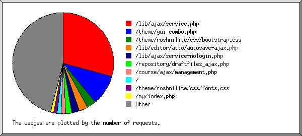
Listing files with at least 20 requests, sorted by the number of requests.
| #reqs | %bytes | last time | file |
|---|---|---|---|
| 1094 | 0.26% | May/14/18 5:56 PM | /lib/ajax/service.php |
| 177 | 0.02% | May/14/18 2:18 AM | /lib/ajax/service.php?sesskey=bE5IvB8wX4&info=core_fetch_notifications |
| 168 | 0.01% | May/14/18 2:18 AM | /lib/ajax/service.php?sesskey=bE5IvB8wX4&info=message_popup_get_unread_popup_notification_count |
| 168 | 0.01% | May/14/18 2:18 AM | /lib/ajax/service.php?sesskey=bE5IvB8wX4&info=core_message_get_unread_conversations_count |
| 64 | May/14/18 1:28 PM | /lib/ajax/service.php?sesskey=GsOgUrJ20d&info=core_user_update_user_preferences | |
| 59 | May/14/18 2:17 PM | /lib/ajax/service.php?sesskey=GsOgUrJ20d&info=core_fetch_notifications | |
| 59 | May/14/18 2:17 PM | /lib/ajax/service.php?sesskey=GsOgUrJ20d&info=message_popup_get_unread_popup_notification_count | |
| 59 | May/14/18 2:17 PM | /lib/ajax/service.php?sesskey=GsOgUrJ20d&info=core_message_get_unread_conversations_count | |
| 27 | May/14/18 2:18 AM | /lib/ajax/service.php?sesskey=bE5IvB8wX4&info=core_calendar_get_action_events_by_timesort | |
| 24 | 0.05% | May/14/18 2:00 PM | /lib/ajax/service.php?sesskey=GsOgUrJ20d&info=core_enrol_get_potential_users |
| 21 | May/14/18 2:22 AM | /lib/ajax/service.php?sesskey=wrvGMFwncn&info=core_fetch_notifications | |
| 21 | May/14/18 2:22 AM | /lib/ajax/service.php?sesskey=wrvGMFwncn&info=message_popup_get_unread_popup_notification_count | |
| 21 | May/14/18 2:22 AM | /lib/ajax/service.php?sesskey=wrvGMFwncn&info=core_message_get_unread_conversations_count | |
| 20 | May/14/18 2:26 AM | /lib/ajax/service.php?sesskey=bg2cNuBIE9&info=message_popup_get_unread_popup_notification_count | |
| 20 | May/14/18 2:26 AM | /lib/ajax/service.php?sesskey=bg2cNuBIE9&info=core_message_get_unread_conversations_count | |
| 20 | May/14/18 2:26 AM | /lib/ajax/service.php?sesskey=bg2cNuBIE9&info=core_fetch_notifications | |
| 15 | May/14/18 2:34 PM | /lib/ajax/service.php?sesskey=LJ5mIc78VL&info=core_message_get_unread_conversations_count | |
| 15 | May/14/18 2:34 PM | /lib/ajax/service.php?sesskey=LJ5mIc78VL&info=core_fetch_notifications | |
| 15 | May/14/18 2:34 PM | /lib/ajax/service.php?sesskey=LJ5mIc78VL&info=message_popup_get_unread_popup_notification_count | |
| 12 | May/14/18 2:25 AM | /lib/ajax/service.php?sesskey=bg2cNuBIE9&info=core_calendar_get_action_events_by_timesort | |
| 11 | May/14/18 2:22 AM | /lib/ajax/service.php?sesskey=wrvGMFwncn&info=core_calendar_get_action_events_by_timesort | |
| 363 | 7.53% | May/14/18 5:56 PM | /theme/yui_combo.php |
| 34 | 0.09% | May/14/18 5:56 PM | /theme/yui_combo.php?3.17.2/cssbutton/cssbutton-min.css |
| 30 | 0.07% | May/14/18 5:56 PM | /theme/yui_combo.php?rollup/3.17.2/yui-moodlesimple-min.css |
| 21 | 0.03% | May/14/18 5:56 PM | /theme/yui_combo.php?m/1526230981/core/dock/dock-loader-min.js |
| 20 | 2.26% | May/14/18 5:56 PM | /theme/yui_combo.php?rollup/3.17.2/yui-moodlesimple-min.js |
| 19 | 0.02% | May/14/18 5:56 PM | /theme/yui_combo.php?m/1526230981/core/event/event-min.js&m/1526230981/filter_mathjaxloader/loader/loader-min.js |
| 13 | 0.09% | May/14/18 5:56 PM | /theme/yui_combo.php?m/1526230981/core/widget/widget-focusafterclose-min.js&3.17.2/plugin/plugin-min.js&m/1526230981/core/lockscroll/lockscroll-min.js&m/1526230981/core/notification/notification-dialogue-min.js&m/1526230981/core/tooltip/tooltip-min.js&m/1526230981/core/popuphelp/popuphelp-min.js |
| 13 | 0.06% | May/14/18 5:56 PM | /theme/yui_combo.php?3.17.2/event-mousewheel/event-mousewheel-min.js&3.17.2/event-resize/event-resize-min.js&3.17.2/event-hover/event-hover-min.js&3.17.2/event-touch/event-touch-min.js&3.17.2/event-move/event-move-min.js&3.17.2/event-flick/event-flick-min.js&3.17.2/event-valuechange/event-valuechange-min.js&3.17.2/event-tap/event-tap-min.js |
| 12 | 0.06% | May/14/18 2:33 PM | /theme/yui_combo.php?3.17.2/cssgrids/cssgrids-min.css&3.17.2/calendar-base/assets/skins/sam/calendar-base.css&3.17.2/calendarnavigator/assets/skins/sam/calendarnavigator.css&3.17.2/calendar/assets/skins/sam/calendar.css |
| 11 | 0.05% | May/14/18 1:50 PM | /theme/yui_combo.php?3.17.2/datatable-base/assets/skins/sam/datatable-base.css&3.17.2/datatable-message/assets/skins/sam/datatable-message.css&3.17.2/datatable-sort/assets/skins/sam/datatable-sort.css&3.17.2/resize-base/assets/skins/sam/resize-base.css |
| 10 | 0.04% | May/14/18 2:04 PM | /theme/yui_combo.php?3.17.2/event-simulate/event-simulate-min.js&3.17.2/async-queue/async-queue-min.js&3.17.2/gesture-simulate/gesture-simulate-min.js&3.17.2/node-event-simulate/node-event-simulate-min.js&m/1526230981/core/actionmenu/actionmenu-min.js |
| 10 | 0.02% | May/14/18 1:50 PM | /theme/yui_combo.php?3.17.2/tabview/assets/skins/sam/tabview.css |
| 110 | 7.21% | May/14/18 5:56 PM | /theme/roshnilite/css/bootstrap.css |
| 103 | 0.01% | May/14/18 2:34 PM | /lib/editor/atto/autosave-ajax.php |
| 94 | 0.34% | May/14/18 2:28 PM | /lib/ajax/service-nologin.php |
| 27 | 0.03% | May/14/18 1:54 AM | /lib/ajax/service-nologin.php?sesskey=bE5IvB8wX4&info=core_output_load_template |
| 12 | 0.01% | May/14/18 1:32 PM | /lib/ajax/service-nologin.php?sesskey=GsOgUrJ20d&info=core_output_load_template |
| 11 | May/14/18 1:54 AM | /lib/ajax/service-nologin.php?sesskey=bE5IvB8wX4&info=core_get_string | |
| 71 | 0.08% | May/14/18 2:34 PM | /repository/draftfiles_ajax.php |
| 71 | 0.08% | May/14/18 2:34 PM | /repository/draftfiles_ajax.php?action=list |
| 55 | May/14/18 12:45 AM | /course/ajax/management.php | |
| 46 | 1.22% | May/14/18 5:56 PM | / |
| 18 | 0.54% | May/14/18 2:17 PM | /?redirect=0 |
| 42 | 0.03% | May/14/18 5:56 PM | /theme/roshnilite/css/fonts.css |
| 41 | 1.81% | May/14/18 2:21 AM | /my/index.php |
| 34 | 0.42% | May/14/18 5:56 PM | /theme/roshnilite/css/bootstrap-responsive.css |
| 32 | May/14/18 2:24 AM | /admin/roles/ajax.php | |
| 30 | 0.08% | May/14/18 5:56 PM | /theme/roshnilite/css/jquery.bxslider.css |
| 29 | 1.81% | May/14/18 1:37 AM | /course/management.php |
| 27 | 0.02% | May/14/18 5:56 PM | /theme/roshnilite/css/reset.css |
| 27 | 0.10% | May/14/18 2:36 PM | /repository/repository_ajax.php |
| 16 | 0.01% | May/14/18 2:36 PM | /repository/repository_ajax.php?action=list |
| 22 | 0.69% | May/14/18 5:56 PM | /theme/roshnilite/css/styles.css |
| 21 | May/14/18 2:25 AM | /lib/ajax/blocks.php | |
| 21 | 0.21% | May/14/18 5:56 PM | /theme/roshnilite/css/font-awesome.min.css |
| 21 | 4.08% | May/14/18 5:56 PM | /lib/requirejs.php/1526230981/core/first.js |
| 20 | 1.59% | May/14/18 2:23 PM | /admin/settings.php |
| 1435 | 72.52% | May/14/18 5:56 PM | [not listed: 416 files] |